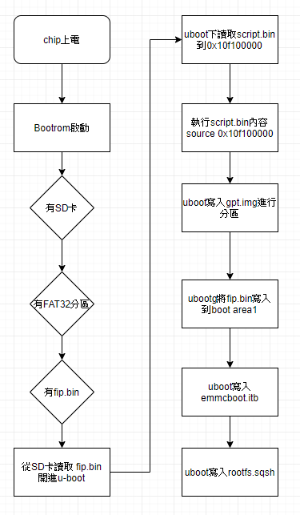
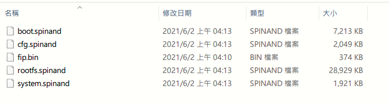
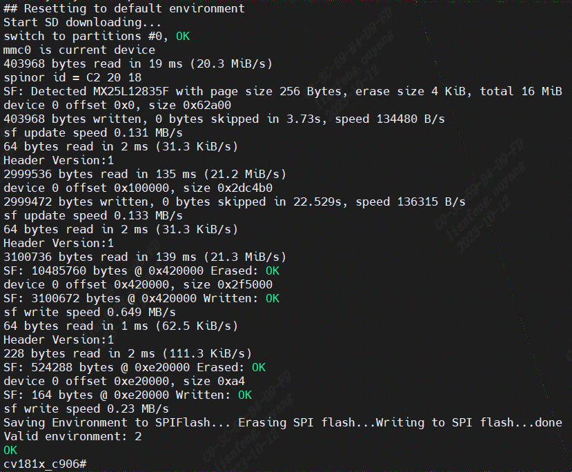

4.2. Bare Burn Using an SD Card¶
4.2.1. Preparation Before Use¶
Refer to 【Linux User 】【1.2If BuildBSP】Buildunder File:
fip.bin - bootloader + uboot
boot.emmc/boot.spinand/boot.spinor- minimal Linux image(Optional)
rootfs.emmc/rootfs.spinand/rootfs.spinor - rootFS(Optional）
system.emmc/system.spinand/system.spinor - rw Partition(Optional)
cfg.emmc/cfg.spinand/cfg.spinor - config rw Partition(Optional)
FAT32 ofTF (micro SD)
4.2.2. Bare BurnFlow ¶
{kind=link}

4.2.3. Operation Procedure¶
willfip.bin，*.emmc/*.spinand/*.spinor to SD in
willSD Cvitek EVBofSD in
willCvitek EVBPlatform
4.2.4. Operation Example¶
UsebeforeConfirmFile
SPINAND
{kind=link}

SD ,andwillCvitek EVBPlatform on after, BurnProgram
PlatformBurnComplete ,can UARTPort tofollowing .
willPlatform BurnComplete

4.2.5. Useupgrade.zip ¶
Refer to 【 Linux User 】【1.2If BuildBSP】Buildupgrade.zip
will upgrade.zip Copy SD
Extract upgrade.zip (PleasewillFileExtract SD of Contents)
4.2.6. Precautions¶
PleaseConfirmSD Card FAT32
4.2.7. Configure the eMMC ECSD register¶
UseSD Bare Burn ， u-boot of eMMC Driver ECSD Modify， ECSD[162] bit， will n_RST ofFunction ， BurnMethodas follows：
inu-bootunderInputfollowingCommand n_RSTFunction
· uboot # mmc fuse_rstn 0